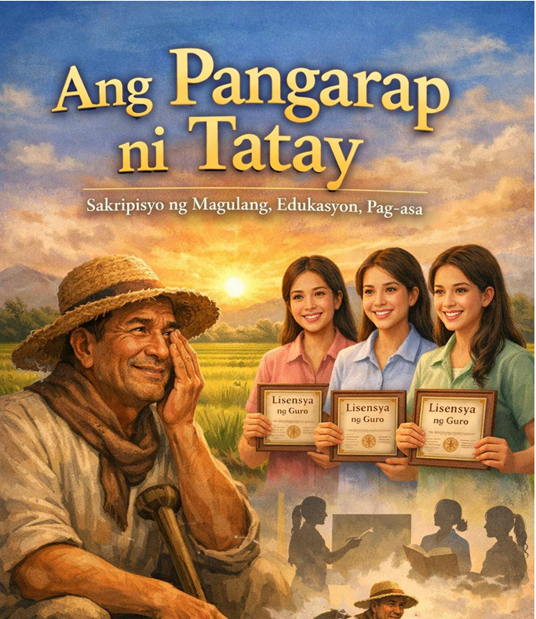

Asignatura: Filipino
Baitang: Senior High School
Paksa: Pag-unawa sa Tekstong Naratibo
Pamagat ng Babasahin: Ang Pangarap ni Tatay
Estratehiya: Think-Write-Share (Isipin-Isulat-Ibahagi)
Isipin: Ano ang nararamdaman mo tungkol sa tema ng sakripisyo at pangarap ng magulang?
Isulat: Pumili ng emoji na naglalarawan sa iyong damdamin.
Masaya : 🙂 Sobrang Saya : 😄 Sobrang Lungkot : 😭 Malungkot : 😔 Galit : 😡
Ibahagi: Ipaliwanag sa isang pangungusap kung bakit iyon ang napili mo.
Panuto: Basahin at unawain ang mga pangungusap. Piliin at ayusin ang
mga pinaghalo-halong titik upang mabuo ang wastong salitang tinutukoy
ng pahayag. Isulat ang tamang sagot sa patlang bago ang bilang.
Halimbawa:
YOKIRIPSAS = Sakripisyo
– Pagtitiis at pagbibigay para sa pamilya.
Panuto: Basahin ang tekstong “Ang Pangarap ni Tatay.” Pagkatapos, sagutin ang mga tanong at gawain sa ibaba. Isulat ang sagot sa patlang o sa hiwalay na papel kung kinakailangan.

Ang Pangarap ni Tatay
May tatlong anak si Tatay: sina Ella, Bela, at Shiela. Bata pa lamang sila ay nasanay na silang makita si Tatay na maagang gumigising upang pumunta sa bukid. Habang tulog pa ang buong baryo, tangan niya ang asarol at baong tinapay. Handa ng makipagsapalaran sa ilalim ng araw para sa kanyang pamilya. Si Nanay naman ay naiiwan sa bahay. Siya ang nag-aalaga sa mga bata, nagluluto ng pagkain, at nag-aasikaso sa lahat ng gawain sa tahanan.
Noong kabataan ni Tatay, pangarap niyang makapagtapos ng pag-aaral. Gusto sana niyang maging guro. Subalit kinailangan niyang huminto sa pag-aaral upang tumulong sa pamilya. Mula noon, pagsasaka na lamang ang naging hanapbuhay niya. Sa bawat pagtatanim at pag-aani, tila kasabay niyang inihahasik ang pag-asa na balang araw ay matutupad sa kanyang mga anak ang pangarap na hindi niya naabot.
Hindi naging madali ang buhay. May mga panahong kapos ang ani at kulang ang pera. May mga gabing tinutulog ni Tatay ang pagod sa banig habang iniisip kung paano muli makababayad sa mga gastusin sa paaralan. Ngunit sa kabila ng hirap, hindi niya kailanman pinahinto sa pag-aaral ang kanyang mga anak. Lagi niyang paalala, “Mag-aral kayo nang mabuti. Iyan ang kayamanang hindi mananakaw.”
Lumipas ang mga taon. Ang tatlong anak ni Tatay ay nagsipagtapos ng pag-aaral. Sa wakas, isa-isa silang naging lisensyadong guro. Isang umaga, habang nag-aalmusal ang pamilya, inabot ng mga anak kay Tatay ang kanilang mga lisensya. Napaupo si Tatay at napangiti, ngunit hindi niya napigilang mapaluha. Tahimik niyang pinahid ang mga luha sa gilid ng kanyang mata. Luha ng pagod na napalitan ng tuwa.
Sa sandaling iyon, naunawaan ng mga anak na ang pangarap ni Tatay ay hindi tuluyang nawala at ipinagpatuloy lamang niya ito sa kanila. At sa bawat mag-aaral na kanilang tuturuan, dala-dala nila ang kuwento ng isang amang magsasaka na minsang nangarap, nagsakripisyo, at nagtagumpay sa paraang hindi niya inakala.
Aral: Ang mga pangarap na isinakripisyo ng magulang ay maaaring mamukadkad sa tagumpay ng kanilang mga anak.
Tema: Sakripisyo ng magulang, edukasyon, pag-asa
Panuto: Isipin ang sagot sa mga tanong bago isulat.
Panuto: Ibahagi ang iyong sagot sa isa o dalawang kaklase (o sa guro kung pang-indibidwal ang activity). Makinig sa kanilang ideya at ikumpara sa sarili mong pananaw. :
Rubrik (Simpleng Batayan ng Pagmamarka)
Pamantayan Puntos
Malinaw ang iniisip bago isulat (Think) 5
Kumpleto at maayos ang pagsusulat (Write) 10
Naibahagi nang maayos sa klase (Share) 5
Kabuuan 20
Panuto: Kumpletuhin ang pangungusap: